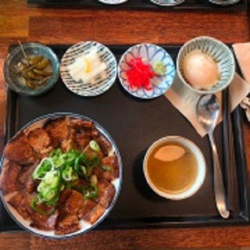
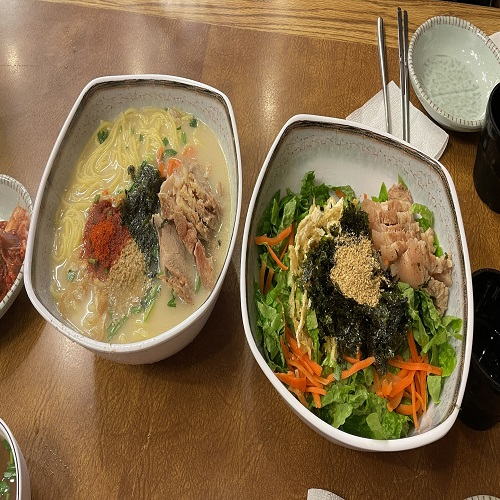
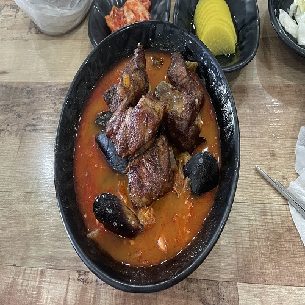

먹을거리
예상 금액(1인)
Total
￦0
-
맛집: 돼지고기
웨이팅: 기본1시간
주소: 제주시 원노형로 41 1층
맛집별점(5점): 4.5 -
우진해장국
￦10000원 상세정보맛집: 해장국
웨이팅: 기본 1시간
주소: 제주 제주시 서사로 11
맛집별점(5점): 4.5 -
시골길
￦20000원(소) 상세정보맛집: 낙지볶음
웨이팅: 기본 30분
주소: 제주 제주시 연동13길 9
맛집별점(5점): 4.0 -
만부정
￦24000원 상세정보맛집: 복어요리
웨이팅: 기본 30분
주소: 제주 제주시 사장길 38 만부정 9
맛집별점(5점): 4.0 -

그랜드키친
￦130000원 상세정보맛집: 뷔페
웨이팅: 예약
주소: 제주 제주시 노연로 12 제주 드림타워 4층
맛집별점(5점): 3.9 -

자구내
￦17000원 상세정보맛집: 향토음식
웨이팅: 기본 10분
주소: 제주 제주시 삼무로3길 18
맛집별점(5점): 3.8 -

숯불덮밥 화리
￦12000원 상세정보맛집: 덮밥
웨이팅: 기본 20분
주소: 제주 제주시 애월읍 유수암평화5길 30
맛집별점(5점): 4.8 -

월령작야 달의객잔
￦28000원 상세정보맛집: 이자까야
웨이팅: 기본 30분
주소: 제주 제주시 한림읍 월령3길 39-5 1층
맛집별점(5점): 4.5 -
애파소
￦9000원 상세정보맛집: 커리
웨이팅: 기본 15분
주소: 제주 제주시 애월읍 애월로 118 2층
맛집별점(5점): 4.3 -

요리하는 키작은삼촌
￦15000원 상세정보맛집: 한식
웨이팅: 기본 20분
주소: 제주 서귀포시 성산읍 일주동로 4304 1층
맛집별점(5점): 4.5 -
광어다
￦22000원 상세정보맛집: 한식
웨이팅: 기본 10분
주소: 제주 서귀포시 표선면 민속해안로 73 광해수산2층
맛집별점(5점): 4.6 -
아루요
￦9000원 상세정보맛집: 일식
웨이팅: 기본 20분
주소: 제주 제주시 애월읍 유수암평화5길 15-8 아루요
맛집별점(5점): 4.5 -
금악정육식당
￦30000원 상세정보맛집: 돼지고기
웨이팅: 기본 5분
주소: 제주 제주시 한림읍 중산간서로 4302
맛집별점(5점): 4.2 -

제주약수터
￦20000원 상세정보맛집: 맥주집
웨이팅: 기본 30분
주소: 제주 서귀포시 중앙로 35 1층
맛집별점(5점): 4.5 -
맨도릉돈까스
￦12000원 상세정보맛집: 돈까스
웨이팅: 기본 30분
주소: 제주시 구좌읍 월정7길 58
맛집별점(5점): 4.5 -
치저스
￦15000원 상세정보맛집: 양식
웨이팅: 기본 30분
주소: 제주시 구좌읍 비자림로 1785
맛집별점(5점): 4.4 -

호커센터
￦20000원 상세정보맛집: 싱가폴음식
웨이팅: 기본 120분
주소: 제주시 애월읍 애월로11길 25-2 호커센터
맛집별점(5점): 4.6 -
신제주보말칼국수
￦9000원 상세정보맛집: 칼국수
웨이팅: 기본 20분
주소: 제주시 선덕로5길 19
맛집별점(5점): 4.5 -
제주 국담
￦10000원 상세정보맛집: 국수
웨이팅: 기본 10분
주소: 제주시 신대로12길 17
맛집별점(5점): 4.0 -

국수만찬
￦10000원 상세정보맛집: 고기국수
웨이팅: 기본 30분
주소: 제주시 은남3길 1
맛집별점(5점): 4.2 -

금호정육점
￦8000원 상세정보맛집: 막창순대
웨이팅: 기본 5분
주소: 제주시 만덕로 24
맛집별점(5점): 4.1 -

돈가쓰튀기는서대리
￦14000원 상세정보맛집: 돈까스
웨이팅: 기본 30분
주소: 제주시 연동14길 149
맛집별점(5점): 4.3 -
동문시장
￦20000원 상세정보맛집: 야시장 및 회
웨이팅: 기본 30분
주소: 제주시 관덕로14길 20
맛집별점(5점): 4.0 -
램앤블랙
￦50000원 상세정보맛집: 양고기
웨이팅: 기본 15분
주소: 제주시 조천읍 교래1길 45 램앤블랙
맛집별점(5점): 4.3 -
매일올레돈
￦30000원 상세정보맛집: 돼지고기
웨이팅: 기본 20분
주소: 제주 서귀포시 중앙로62번길 17
맛집별점(5점): 4.3 -
목화휴게소
￦7000원 상세정보맛집: 마른오징어
웨이팅: 기본 15분
주소:서귀포시 성산읍 해맞이해안로 2526
맛집별점(5점): 4.5 -
미영이네
￦30000원 상세정보맛집: 고등어회
웨이팅: 기본 30분
주소: 서귀포시 대정읍 하모항구로 42
맛집별점(5점): 4.3 -
미풍해장국
￦10000원 상세정보맛집: 해장국
웨이팅: 기본 5분
주소: 제주 제주시 제원길 7
맛집별점(5점): 4.0 -
바그다드
￦20000원 상세정보맛집: 인도카레
웨이팅: 기본 20분
주소: 제주시 관덕로8길 34
맛집별점(5점): 4.5 -

백두산 육개장
￦1200원 상세정보맛집: 라면
웨이팅: 기본 3시간
주소: 제주 서귀포시 토평동 산15-1
맛집별점(5점): 4.9 -
사랑식당
￦12000원 상세정보맛집: 정식
웨이팅: 기본 5분
주소: 제주시 한경면 두신로 46
맛집별점(5점): 4.2 -
산우정
￦40000원 상세정보맛집: 육회
웨이팅: 기본 30분
주소: 제주시 은남4길 29 원빌라
맛집별점(5점): 4.5 -
소섬전복
￦17000원 상세정보맛집: 전복집
웨이팅: 기본 10분
주소: 제주시 우도면 우도해안길 1158
맛집별점(5점): 3.8 -
수목원길야시장
￦15000원 상세정보맛집: 야시장
웨이팅: 기본 30분
주소: 제주 제주시 은수길 69
맛집별점(5점): 4.0 -
아살람
￦15000원 상세정보맛집: 중동음식
웨이팅: 기본 15분
주소: 제주시 중앙로2길 7
맛집별점(5점): 4.5 -
엔야끼니꾸
￦20000원 상세정보맛집: 소고기
웨이팅: 기본 10분
주소: 제주시 국기로 25
맛집별점(5점): 3.9 -
연돈
￦12000원 상세정보맛집: 돈까스
웨이팅: 기본 1시간
주소: 서귀포시 일주서로 968-10
맛집별점(5점): 4.4 -
올레마당
￦15000원 상세정보맛집: 생선구이
웨이팅: 기본 10분
주소: 서귀포시 안덕면 사계남로 224
맛집별점(5점): 4.5 -
올리다버거
￦12000원 상세정보맛집: 햄버거
웨이팅: 기본 30분
주소: 제주시 남성로 154-6
맛집별점(5점): 4.3 -
우동카덴
￦15000원 상세정보맛집: 우동정식
웨이팅: 기본 30분
주소: 제주시 조천읍 교래3길 23
맛집별점(5점): 4.1 -
일억조
￦10000원 상세정보맛집: 정식
웨이팅: 기본 10분
주소: 제주시 한림읍 한림상로 140
맛집별점(5점): 4.2 -
제주곱
￦30000원 상세정보맛집: 곱창
웨이팅: 기본 20분
주소: 제주시 신대로16길 42
맛집별점(5점): 4.5 -

제주촌집
￦30000원 상세정보맛집: 돼지고기
웨이팅: 기본 30분
주소: 서귀포시 표선면 표선중앙로59번길 4
맛집별점(5점): 4.6 -
조끄뜨레
￦15000원 상세정보맛집: 돈까스
웨이팅: 기본 30분
주소: 제주시 한경면 두신로 85
맛집별점(5점): 4.5 -

짬뽕에취한날
￦12000원 상세정보맛집: 중식당
웨이팅: 기본 30분
주소: 제주 제주시 귀아랑2길 4
맛집별점(5점): 4.4 -
한라닭강정
￦20000원 상세정보맛집: 닭강정
웨이팅: 기본 20분
주소: 제주시 서문로 49 한라닭강정
맛집별점(5점): 4.4 -
풍년해장국
￦10000원 상세정보맛집: 해장국
웨이팅: 기본 10분
주소: 제주시 연동11길 15 1층
맛집별점(5점): 4.5 -

화룡양꼬치
￦20000원 상세정보맛집: 양꼬치
웨이팅: 기본 20분
주소: 제주시 신대로16길 40
맛집별점(5점): 4.3 -
라스또르따스
￦15000원 상세정보맛집: 멕시코
웨이팅: 기본 30분
주소: 제주 제주시 광양11길 8-1
맛집별점(5점): 4.4 -
광어공방
￦25000원 상세정보맛집: 횟집
웨이팅: 기본 10분
주소: 제주시 노형6길 20
맛집별점(5점): 4.3 -
연동회관
￦12000원 상세정보맛집: 덮밥
웨이팅: 기본 10분
주소: 제주시 연동13길 33
맛집별점(5점): 4.5 -
엉덩몰
￦15000원 상세정보맛집: 물회
웨이팅: 기본 10분
주소: 제주특별자치도 제주시 성두길 7-7
맛집별점(5점): 4.3 -
자현우육면
￦10000원 상세정보맛집: 우육면
웨이팅: 기본 10분
주소: 제주시 노형1길 8-8
맛집별점(5점): 4.2 -
정직한초밥
￦20000원 상세정보맛집: 초밥
웨이팅: 기본 30분
주소: 제주시 신대로12길 10 1층
맛집별점(5점): 4.4 -
차돌집
￦30000원 상세정보맛집: 차돌구이
웨이팅: 기본 10분
주소: 제주시 신대로10길 29
맛집별점(5점): 4.2 -
하나맘김밥
￦5000원 상세정보맛집: 김밥
웨이팅: 기본 10분
주소: 제주시 귀아랑2길 14
맛집별점(5점): 4.1 -
마시레치킨
￦18000원 상세정보맛집: 치킨
웨이팅: 기본 20분
주소: 제주시 애월읍 하귀로 61
맛집별점(5점): 4.4 -
돼지구이연구소
￦12000원 상세정보맛집: 불백
웨이팅: 기본 30분
주소: 제주시 신대로13길 19
맛집별점(5점): 4.3 -
산전수전인생역전
￦15000원 상세정보맛집: 전집
웨이팅: 기본 10분
주소: 제주시 은남길 40
맛집별점(5점): 4.4 -
명자네분식
￦10000원 상세정보맛집: 분식집
웨이팅: 기본 15분
주소: 제주시 신대로16길 44 (연동)
맛집별점(5점): 4.4